Painting and drawing courses in Turin and around
Painting, watercolour, drawing, illustration, comics and collage courses and workshops in Turin, Cuneo and around.
Search all workshops57 activities coming up · updated on 20 November 2026
 sun8novPaintingWatercolour workshop: galaxies and halosfrom Sunday 8 November to Sunday 29 November, 10:00–12:30Vanchiglia (TO)with Yanañagui at Libreria Sur
sun8novPaintingWatercolour workshop: galaxies and halosfrom Sunday 8 November to Sunday 29 November, 10:00–12:30Vanchiglia (TO)with Yanañagui at Libreria Sur from27octPaintingZentangle: drawing to stay in the momentfrom Tuesday 27 October to Tuesday 8 December, every two weeks, 17:30–19:00Pinerolo (TO) · Pay what you likewith Silvia Gardiol at 39/ Tramediffuse
from27octPaintingZentangle: drawing to stay in the momentfrom Tuesday 27 October to Tuesday 8 December, every two weeks, 17:30–19:00Pinerolo (TO) · Pay what you likewith Silvia Gardiol at 39/ Tramediffuse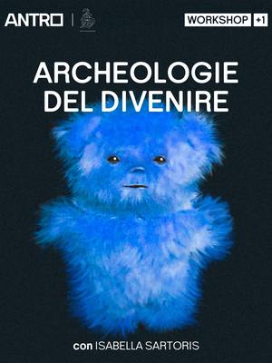
from3novPaintingArcheologie del divenire: art therapyfrom Tuesday 3 November to Wednesday 16 June, 20:30San Salvario (TO) · Freewith Isabella Sartoris at Antro- from14novFor familiesLumi’s journey: emotions for childrenfrom Saturday 14 November to Saturday 12 December, every Saturday, 10:00–11:30Pinerolo (TO) · 100 €with Le Arti di Marti with Emanuela Busso
- sat21novFor familiesMiniatures workshop: painting in 3DSaturday 21 November, 11:00–12:30Centro (TO) · Freewith Davide Fortuna at Biblioteca della Regione Piemonte
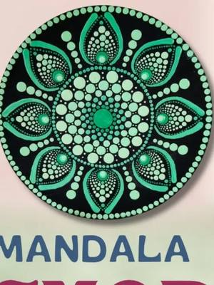
sat21novPaintingCreate your mandala: dot paintingSaturday 21 November, 15:00–18:00Borgo Vittoria (TO)with Alma Mandala at Spazio Saper Fare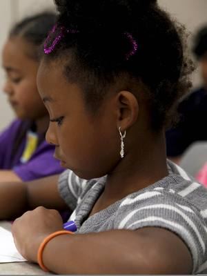
from14novPaintingCreative workshop: painting, drawing and recyclingfrom Saturday 14 November to Saturday 19 December, every Saturday, 15:00–17:00Alba (CN) · Freewith Marta e Maria ODV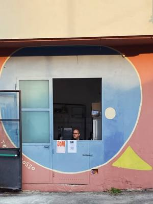
sat21novPaintingVisual arts workshop: colours and shapesSaturday 21 November, 15:00–19:00Alba (CN)with Spazio Döm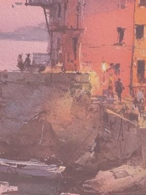
sat21novPaintingWatercolour workshop: advanced courseSaturday 21 November, 15:30Borgomanero (NO) · 49 €with Creo Workshop- sun22novPaintingWatercolour workshop: Christmas subjectsSunday 22 November, 15:00–18:00Venaria Reale (TO)with Curtis Sheeran
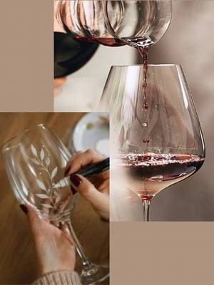
sun22novPaintingGlass painting: paint a glass, taste wineSunday 22 November, 17:00–19:00Cuneo (CN) · 35 €with Angelica Nolasco at Atelier Crea-Arti thu26novPaintingPainting workshop: creatures on porcelainThursday 26 November, 18:00Centro (TO) · 60 €with Benedetta Faravelli at Quadratino
thu26novPaintingPainting workshop: creatures on porcelainThursday 26 November, 18:00Centro (TO) · 60 €with Benedetta Faravelli at Quadratino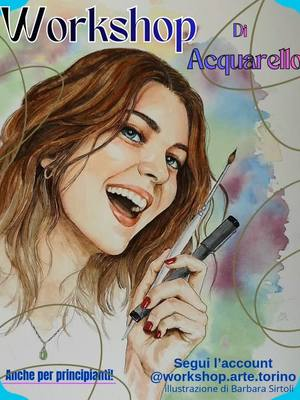
fri27novPaintingIllustrating Turin: watercolour viewsFriday 27 November, 18:00–20:00Turinwith Barbara Sirtoli sat28novPaintingAperitivo Artistico: canvas for studentsSaturday 28 NovemberBiella (BI) · 27 €with Aperitivo Artistico
sat28novPaintingAperitivo Artistico: canvas for studentsSaturday 28 NovemberBiella (BI) · 27 €with Aperitivo Artistico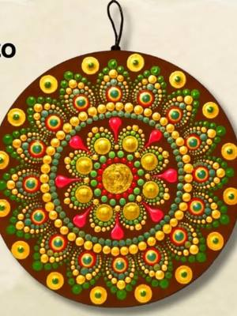
sat28novPaintingMake your Christmas mandala: dot artSaturday 28 November, 14:00–17:30Druento (TO) · 40 €with Alma Mandala at Ki Daimon- sat28novPaintingWatercolour workshop: botanical subjectsSaturday 28 November, 15:00–18:00Venaria Reale (TO)with Curtis Sheeran
 mon30novPaintingColori di me: art therapy eveningMonday 30 November, 20:00Borgaro Torinese (TO) · Freewith Giulia Candido at Nikin House
mon30novPaintingColori di me: art therapy eveningMonday 30 November, 20:00Borgaro Torinese (TO) · Freewith Giulia Candido at Nikin House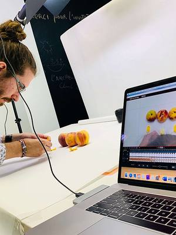
wed2decPaintingMani: animation «pictures in motion»Wednesday 2 December, 17:00–19:00Vanchiglietta (TO)with Nie Dala at Bocciofila Vanchiglietta- thu3decPaintingIl Cervello Poeta: mending with goldThursday 3 December, 18:30–20:30San Donato (TO) · 30 €with Psicolab at La Falegnameria
- fri4decPaintingSeason’s greetings: watercolour cardsFriday 4 December, 17:00–19:00Centro (TO) · 40 €with Barbara Sirtoli
 sat5decPaintingWatercolour workshop: pomegranateSaturday 5 December, 10:00–13:00San Salvario (TO) · 65 €with Jasmine Watercolors
sat5decPaintingWatercolour workshop: pomegranateSaturday 5 December, 10:00–13:00San Salvario (TO) · 65 €with Jasmine Watercolors sat5decPaintingBookmark workshop: watercolour and zentangleSaturday 5 December, 15:30Borgomanero (NO) · 39 €with Creo Workshop
sat5decPaintingBookmark workshop: watercolour and zentangleSaturday 5 December, 15:30Borgomanero (NO) · 39 €with Creo Workshop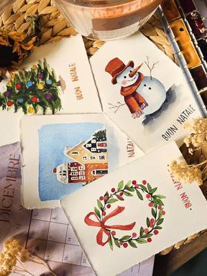
sun6decPaintingWatercolour workshop: Christmas cardsSunday 6 December, 10:00–13:00San Salvario (TO) · 65 €with Jasmine Watercolors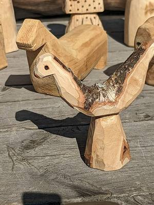
sun6decOtherWoodwork workshop: mechanical birdSunday 6 December, 11:00–13:00San Salvario (TO) · 25 €with Edelweiss Toys at San Salvario Emporium sun6decPaintingPaint & Cream Tea: Victorian puzzle purseSunday 6 December, 16:00–19:00Turin · 40 €with Laura Raduazzo at Smith’s British
sun6decPaintingPaint & Cream Tea: Victorian puzzle purseSunday 6 December, 16:00–19:00Turin · 40 €with Laura Raduazzo at Smith’s British- sun6decPaintingPaint & sip: a painting with a drinkfrom Sunday 6 December to Sunday 20 December, 20:00–22:00San Salvario (TO) · 25 €with CamPaint
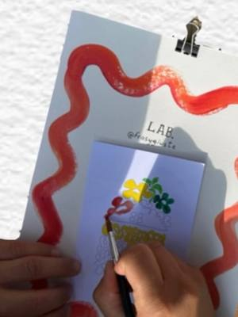
thu10decPaintingLab frasygiuste: paint your phraseThursday 10 December, 20:00–21:30Verzuolo (CN)with Frasygiuste at Azienda Agricola Giolitti sat12decPaintingArt ritual: colour, gold leaf and textureSaturday 12 December, 17:00Borgomanero (NO) · 49 €with Atelier di Melissa at Creo Workshop
sat12decPaintingArt ritual: colour, gold leaf and textureSaturday 12 December, 17:00Borgomanero (NO) · 49 €with Atelier di Melissa at Creo Workshop- sun13decPaintingWatercolour workshop: Christmas cardsSunday 13 December, 10:00Borgomanero (NO) · 39 €with Alessia Pezzimenti at Creo Workshop
- tue15decPaintingWatercolour workshop: Christmas cardsTuesday 15 December, 18:30–20:30Mondovì (CN) · 20 €with Cooperativa Il Melograno
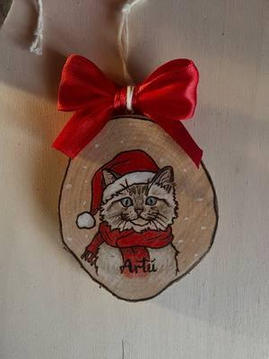
thu17decPaintingPyrography workshop: wooden ornamentThursday 17 December, 18:30Borgomanero (NO) · 35 €with Aeternum at Creo Workshop sun17janPaintingWatercolour workshop: helleboreSunday 17 January, 10:00–13:00San Salvario (TO) · 65 €with Jasmine Watercolors
sun17janPaintingWatercolour workshop: helleboreSunday 17 January, 10:00–13:00San Salvario (TO) · 65 €with Jasmine Watercolors sun14febPaintingWatercolour workshop: rubber plantSunday 14 February, 10:00–13:00San Salvario (TO) · 65 €with Jasmine Watercolors
sun14febPaintingWatercolour workshop: rubber plantSunday 14 February, 10:00–13:00San Salvario (TO) · 65 €with Jasmine Watercolors from29julPaintingGarden Chronicles: botanical drawingfrom Thursday 29 July to Sunday 1 August, 18:30Lingotto (TO) · 450 €with Riccardo Guasco e Giovanna Giuliano at Print Club Torino
from29julPaintingGarden Chronicles: botanical drawingfrom Thursday 29 July to Sunday 1 August, 18:30Lingotto (TO) · 450 €with Riccardo Guasco e Giovanna Giuliano at Print Club Torino dateTBDPaintingDrawing and painting courses: ink and pastelDate TBDTurinwith Barbara Sirtoli
dateTBDPaintingDrawing and painting courses: ink and pastelDate TBDTurinwith Barbara Sirtoli dateTBDPaintingPainting course: porcelain and fabricDate TBDMirafiori (TO)with Emilia Cerrato at Casa nel Parco
dateTBDPaintingPainting course: porcelain and fabricDate TBDMirafiori (TO)with Emilia Cerrato at Casa nel Parco dateTBDOtherCascina Roccafranca: this season’s coursesDate TBDMirafiori (TO)with Cascina Roccafranca
dateTBDOtherCascina Roccafranca: this season’s coursesDate TBDMirafiori (TO)with Cascina Roccafranca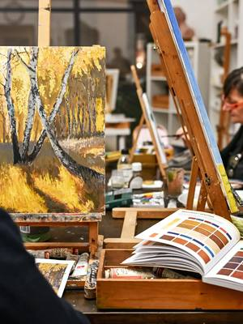
dateof your choicePaintingCreative gym: art for adultsDate of your choiceTurin · 30 € per lessonwith Kreative Club dateof your choicePaintingUrban sketching course: drawing the cityDate of your choiceTurin · 129 € for 6 lessonswith Kreative Club
dateof your choicePaintingUrban sketching course: drawing the cityDate of your choiceTurin · 129 € for 6 lessonswith Kreative Club dateof your choicePaintingSip and paint: acrylics in a greenhouseDate of your choiceCampidoglio (TO) · from 55 €with Luzzi B
dateof your choicePaintingSip and paint: acrylics in a greenhouseDate of your choiceCampidoglio (TO) · from 55 €with Luzzi B dateof your choiceOtherUpholstery and restyling: poufs and furnitureDate of your choiceBarriera di Milano (TO) · from 20 €with Magazzini Tessili
dateof your choiceOtherUpholstery and restyling: poufs and furnitureDate of your choiceBarriera di Milano (TO) · from 20 €with Magazzini Tessili everytuePaintingLearn to paint: an oil painting courseEvery TuesdayMondovì (CN)with Dalid Baez at Museo Della Casa
everytuePaintingLearn to paint: an oil painting courseEvery TuesdayMondovì (CN)with Dalid Baez at Museo Della Casa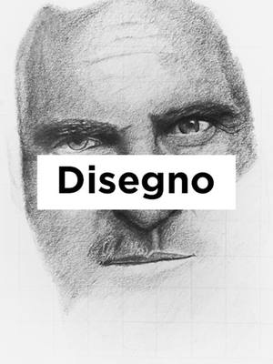
dateTBDPaintingNovel Academy: drawing and painting coursesDate TBDTurinwith Novel Academy dateTBDPaintingDrawing courses: graphite, pastel and inkDate TBDCentro (TO)with Barbara Sirtoli at Polo Le Rosine
dateTBDPaintingDrawing courses: graphite, pastel and inkDate TBDCentro (TO)with Barbara Sirtoli at Polo Le Rosine dateTBDPaintingManga drawing course: your own characterDate TBDCentro (TO)with Alice Molinaro at Polo Le Rosine
dateTBDPaintingManga drawing course: your own characterDate TBDCentro (TO)with Alice Molinaro at Polo Le Rosine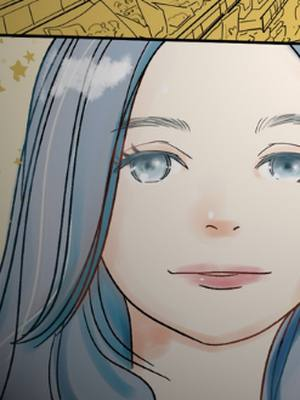
dateTBDPaintingManga workshop: stories and comicsDate TBDCentro (TO)with Wada Shinobu at Polo Le Rosine dateof your choicePaintingPorcelain painting: a mixed-media courseDate of your choiceCit Turin (TO)with Scialabà
dateof your choicePaintingPorcelain painting: a mixed-media courseDate of your choiceCit Turin (TO)with Scialabà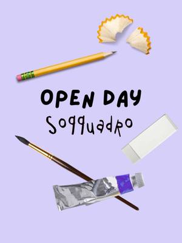
dateTBDPaintingDrawing and painting courses: trial lessonDate TBDCollegno (TO)with Soqquadro dateTBDPaintingComics course: from characters to storyDate TBDCollegno (TO)with Giorgio Sommacal e Claudio Taurisano at Soqquadro
dateTBDPaintingComics course: from characters to storyDate TBDCollegno (TO)with Giorgio Sommacal e Claudio Taurisano at Soqquadro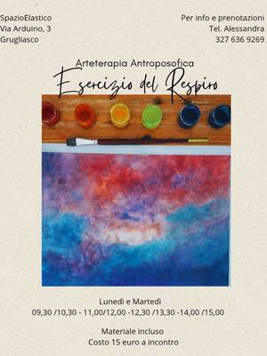
everymonPaintingAnthroposophic painting: colour and waterEvery MondayGrugliasco (TO) · 15 € per sessionwith Alessandra at Spazio Elastico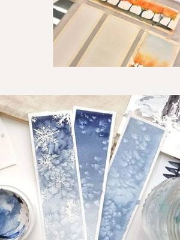
everywedPaintingArt course in English: for all agesEvery Wednesday, 15:00–16:30Cuneo (CN) · 180 € for 6 lessonswith Chantal at Atelier Crea-Arti everymonFor familiesOne step at a time: cartoons for kidsEvery Monday, 16:30–18:30Aurora (TO) · 30 € per monthwith Luna Clara Ronco at Cecchi Point
everymonFor familiesOne step at a time: cartoons for kidsEvery Monday, 16:30–18:30Aurora (TO) · 30 € per monthwith Luna Clara Ronco at Cecchi Point everytuePaintingComics course: characters and storiesEvery Tuesday, 17:00–20:00San Mauro Torinese (TO)with Lorenzo Balocco at upTOyou
everytuePaintingComics course: characters and storiesEvery Tuesday, 17:00–20:00San Mauro Torinese (TO)with Lorenzo Balocco at upTOyou everyfriPaintingArt course: drawing and paintingEvery Friday, 17:00–19:00San Mauro Torinese (TO)with upTOyou
everyfriPaintingArt course: drawing and paintingEvery Friday, 17:00–19:00San Mauro Torinese (TO)with upTOyou everyfriPaintingPainting course: oils and the old mastersEvery Friday, 18:00–20:00Centro (TO) · 100 € for 4 lessonswith Mery Rigo at Polo Le Rosine
everyfriPaintingPainting course: oils and the old mastersEvery Friday, 18:00–20:00Centro (TO) · 100 € for 4 lessonswith Mery Rigo at Polo Le Rosine dateof your choicePaintingDrawing Club: illustration for funEvery other Wednesday, 19:00–20:30Barriera di Milano (TO) · 15 € per lessonwith Malena De Luca at Bunker
dateof your choicePaintingDrawing Club: illustration for funEvery other Wednesday, 19:00–20:30Barriera di Milano (TO) · 15 € per lessonwith Malena De Luca at Bunker everymonPaintingGraffiti course: urban writingEvery Monday, 19:00–20:30Barriera di Milano (TO) · 20 € per lessonwith Nikka at Bunker
everymonPaintingGraffiti course: urban writingEvery Monday, 19:00–20:30Barriera di Milano (TO) · 20 € per lessonwith Nikka at Bunker